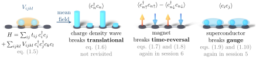
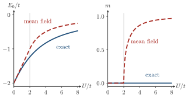

Advanced Quantum Materials 2027 · All lectures · Lecture notes
Session 1. Second Quantization, Mean-Field, and Spontaneous Symmetry Breaking
1.12 The general interacting Hamiltonian, and the tool we will use on it
We can now state the problem that this whole session leads to. The Hamiltonians that we are interested in have the generic form
\[H = \sum_{ij} t_{ij}\, c_i^\dagger c_j \;+\; \sum_{ijkl} V_{ijkl}\, c_i^\dagger c_j^\dagger c_k c_l, \tag{1.5}\]
which is a free part, single-particle and exactly solvable, plus a quartic interaction. The interaction itself can come from the plain electrostatic Coulomb repulsion. It can also be an effective interaction mediated by some other quasiparticle, such as phonons, magnons or plasmons, and this can make the total interaction attractive instead of repulsive. We will treat these interactions in a phenomenological way, as given effective models, and we will not derive them microscopically from first principles.
To solve (1.5) exactly is in general impossible, for the exponential reason of Section 1.9. Mean-field theory is the tool that still allows us to obtain systematic solutions from it, even if they are approximate, and it can predict a wide range of symmetry-broken states. In this session we will study three of them, which are the same three cases that we classified in Section 1.11b.
Broken time-reversal symmetry, which is magnetism. If we run the movie of the system backward, it looks different from the original.
Broken lattice translational symmetry, which is the charge density wave. A Hamiltonian that is the same at every site at the start ends up with charge on some sites and not on others.
Broken gauge symmetry, which is superconductivity. The system develops an order parameter with a physical phase, which the symmetry of the original Hamiltonian does not allow.
Figure 1.3 shows these three branches next to each other, together with the equation from which each one is developed and the session where it appears again.

Two of the three cases of this session come back in their own sessions, where we treat them in much more detail. Superconductivity is the topic of Session 5, and magnetism of Session 6. You can think of what follows as a first pass, whose goal is to set up the mean-field method itself, and not as the final discussion of either of them.

The quartic term of (1.5) has four operators, and the mean-field Hamiltonian has only two. What do we do with the other two?
Show the answers
- A. ✗ False
This is false. Take the Hubbard dimer. If we drop the interaction, the spectrum is \(\pm t\) for every \(U\), and no magnetic solution can appear. The interaction is what drives the magnetization, so it cannot be dropped.
- B. ✓ True
This is true. The expectation value is a number, so the two operators that remain form a single-particle term. The number comes from the state itself, which is why we solve the problem self-consistently.
- C. ✗ False
This is false. In the vacuum \(\langle c_i^\dagger c_j\rangle=0\) for every pair. The mean field would then vanish, and the chain would have no charge modulation, while the loop of the figure ends with charges that differ from site to site.
The self-consistent loop closes because the expectation values depend on the state that they define.
Try it. Run the cell with the antiferromagnetic guess and watch the gap open as \(U\) grows. Then use the ferromagnetic guess of the commented line. The gap stays closed, so the two guesses end in different solutions of the same Hamiltonian.
- Section 5.4 shows how phonons give an attractive interaction, and it decouples it in the pairing channel with the same method.
- Section 6.3 applies mean field to the Hubbard model in more detail, and Section 6.7 shows where mean field breaks down.
- In Section 8.9 the same decoupling is applied to the partons of a quantum spin liquid.